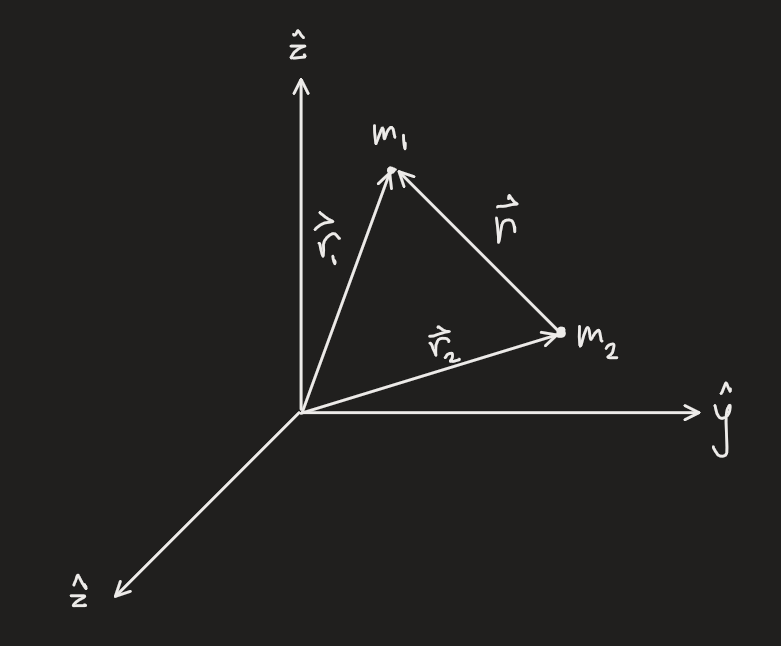
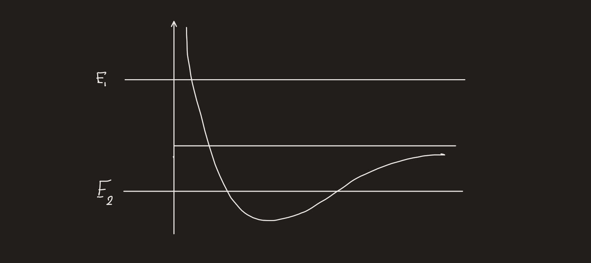

(If the LaTeX hasn't loaded, refresh, may take multiple times)
Newtonian Physics
### Newton's First and Second Laws
>#### **Newton's First Law**
>**In the absence of forces, a particle moves with constant velocity.**
>
>This is often called the law of inertia, showing that massful bodies resist changes in states of motion
>#### **Newton's Second Law**
>**Force equals mass time acceleration**
>
>This of course leads to the classic equation $$\textbf{F}=m\textbf{a}=m\ddot{\textbf{r}}$$
Note that momentum, $\textbf{p}$, is $m\textbf{v}$, and therefore$$\dot{\textbf{p}}=m\dot{\textbf{v}}=m\textbf{a}$$
The second law can then be restated as$$\textbf{F}=\dot{\textbf{p}}$$
Due to more modern discoveries, especially in general and special relativity, it has been revealed that Newton's Second Law only holds true in what are known as inertial reference frames, frames moving at constant velocity.
Let's explore an example:
Say there is a skateboard on a bus.
Imagine the reference frame being the bus. When the bus accelerates to the right, the skateboard appears to accelerate to the left from the current reference frame.
However, there is no net force on the skateboard. This means the bus is a **non-inertial** frame, since the net force is zero and the acceleration is not, thus breaking the second law.
### Newton's Third Law
An interesting thing to note in physics is that forces always involve two objects. If there is a force on an object, there must also be another object to *extert* that force, and objects must also extert a force on another object.
>#### **Newton's Third Law**
>If object 1 exterts a force $\textbf{F}_{21}$ on object 2, the object 2 always exterts a reaction force $\textbf{F}_{12}$ on object 1 given by$$\textbf{F}_{12}=-\textbf{F}_{21}$$
Let's discuss how this relates to the conservation of momentum.
Consider two objects, where object 1 exterts force $\textbf{F}_{21}$ on object 2.
The net force on object 1 is given by $\textbf{F}_{1}=\textbf{F}_{1}^{\text{ext}}+\textbf{F}_{12}$
And the net force on object 2 is given by $\textbf{F}_2=\textbf{F}^{\text{ext}}_{2}+\textbf{F}_{21}$
Using the second law, we can compute the time derivatives of the momenta:
$$\dot{\textbf{p}}_1=\textbf{F}_{12}+\textbf{F}_{1}^{\text{ext}}$$
$$\dot{\textbf{p}}_2=\textbf{F}_{21}+\textbf{F}_{2}^{\text{ext}}$$
The total momentum of the two objects is given by
$$\textbf{P}=\textbf{p}_{1}+\textbf{p}_{2}$$and
$$\dot{\textbf{P}}=\dot{\textbf{p}}_{1}+\dot{\textbf{p}}_{2}$$
In this equation the forces exterted on each particle by the other cancel out, giving:
$$\dot{\textbf{P}}=\textbf{F}_{1}^{\text{ext}}+\textbf{F}_{2}^{\text{ext}}=\textbf{F}^{\text{ext}}$$
So, when the external force is zero, the momentum does not change, or in other words, it is conserved.
>#### **Law of Conservation of Momentum**
>If the net external force on an $N$-particle system is zero, the systen's total momentum is constant.
>In mathematics:
>If$$\textbf{F}^{\text{ext}}=0$$Then$$\textbf{P}=C$$
>Where $C$ is a constant
### Newton's Second Law in Polar Coordinates
Let's derive Newton's Second Law in Polar Coordinates.
First we start with the basic law:$$\vec{\textbf{F}}=m\vec{\textbf{a}}$$
In Polar Coordinates, $\vec{\textbf{a}}=\ddot{\vec{\textbf{r}}}$, and $\vec{\textbf{r}}=r\hat{\textbf{r}}$
So,
$$\dot{\vec{\textbf{r}}}=\frac{d}{dt}(r\hat{\textbf{r}})=\dot{r}\hat{\textbf{r}}+r\frac{d\hat{\textbf{r}}}{dt}$$
Now we search for the time derivative of $\hat{\textbf{r}}$, since in polar coordinates $\hat{\textbf{r}}$ changes with $\phi$, In fact since $\hat{\textbf{r}}_1$ and $\hat{\textbf{r}}_2$ would be sufficiently parallel for a sufficiently small $\Delta t$, the change in $\hat{\textbf{r}}$ is in the direction of $\hat{\phi}$ with a magnitude of $\Delta \phi$. In other words, the infinitesimally small (the derivative) change in $\hat{\textbf{r}}$ is given by:
$$\frac{d\hat{\textbf{r}}}{dt}=\dot{\phi}\hat{\phi}$$
This gives us our velocity vector in polar coordinates,$$\vec{\textbf{v}}=\dot{r}\hat{\textbf{r}}+r\dot{\phi}\hat{\phi}$$
Now we need to differentiate a second time, to get the acceleration:
$$\vec{\textbf{a}}=\ddot{r}\hat{\textbf{r}}+\frac{d\hat{\textbf{r}}}{dt}\dot{r}+\dot{r}\dot{\phi}\hat{\phi}+r\ddot{\phi}\hat{\phi}+\frac{d\hat{\phi}}{dt}r\dot{\phi}$$
Next we need to determine the time derivative of $\hat{\phi}$. $\hat{\phi}$ Notice how $\hat{\phi}$ gets flatter as $\phi$ increases, meaning they are inversely related. In addition, $\hat{\phi}$ changes in the direction of $\hat{\textbf{r}}$. This gives us
$$\frac{d\hat{\phi}}{dt}=-\dot{\phi}\hat{\textbf{r}}$$
This gives us the final result for the acceleration:
$$\vec{\textbf{a}}=(\ddot{r}-r\dot{\phi}^2)\hat{\textbf{r}}+(r\ddot{\phi}+2\dot{r}\dot{\phi})\hat{\phi}$$
Multiply this result by $m$ and we get the net force, thus giving us Newton's Second Law
### Center of Mass
Consider of group of $N$ particles. The center of mass of the system is defined to be
$$\textbf{R}=\frac{1}{M}\sum\limits_{\alpha=1}^{N}m_{\alpha}\textbf{r}_{\alpha}$$
A non point object can be considered a continuous set of particles, and therefore this sum becomes an integral:
$$\textbf{R}=\frac{1}{M}\int\limits_{Z}\textbf{r}dm$$
### Moment of Inertia
>#### **Moment of Inertia**
>Defined to be an object or system's resistance to rotation, the moment of inertia is given by
>$$I=\sum m_{\alpha}r^{2}_{\alpha}$$
>Where $r_\alpha$ is the distance to the axis of rotation
>
>When system is continuous, not discrete, this sum becomes an integral.
Momentum
Before diving into this subject is it worthy to recall the Law of Conservation of Momentum (See Newtonian Dynamics)
This is also extended to systems of particles with no external forces.
We can also write the total momentum of any $N$-particle system as
$$M\dot{\textbf{R}}$$
Where $\textbf{R}$ is the position of the center of mass
### Rocket Analysis
Let's begin with a thought experiment.
Suppose an astronaut holding a wrench is drifting away from their spacecraft. How do they get back?
One simple way is to throw the wrench as hard as they can in the opposite direction. With no external forces in space, momentum must be constant, and therefore to resolve this, the astronaut will accelerate towars the spacecraft.
This is the basic principle of rockets, although in the case of propulsion systems, it is a continuous expulsion of gas towards the earth that thrusts the rocket upwards.
Let's examine a rocket already in space.
Note that the rocket's mass is steadily decreasing.
At time $t$, the momentum is $P(t)=mv$
At time $t+dt$, the mass is $m+dm$ and the momentum is $(m+dm)(v+dv)$
The fuel that has been ejected has a mass of $-dm$ and a speed of $v-v_{ex}$
Then, the momentum of the system looks like this:
$$P(t+dt)=(m+dm)(v+dv)-dm(v-v_{ex})=mv+mdv+dmv_{ex}$$
Then, since $dP=P(t+dt)-P(t)$,
$$dP=mdv+dmv_{ex}$$
In space, there are no external forces, so the momentum is constant, that is, $dP=0$ at all times.
Therefore
$$m\space dv=-dm\space v_{ex}$$
We can divide both sides by $dt$, giving
$$m\dot{v}=-\dot{m}v_{ex}$$
The product $-\dot{m}v_{ex}$ is called the **thrust**. The differential equation can be solved using separation of variables, giving
$$v-v_{0}=v_{ex}\ln(m_{0}/m)$$
### Angular Momentum
>#### **Definition of Angular Momentum for a Single Particle**
>The angular momentum of a single particle is defined to be
>$$\ell=\textbf{r}\times\textbf{p}$$
>Where $\textbf{r}$ is the position relative to a chosen origin, and $\textbf{p}$ is the linear momentum of the particle
>This vector has the relation:
>$$\dot{\ell}=\Gamma$$
Let's that the time derivative:
$$\dot{\ell}=\frac{d}{dt}(\textbf{r}\times\textbf{p})=(\dot{\textbf{r}}\times\textbf{p})+(\textbf{r}\times\dot{\textbf{p}})=\textbf{r}\times\textbf{F}=\Gamma$$
this is possible because $\textbf{p}=m\dot{\textbf{r}}$, and finally, $\Gamma$ represents the net torque around the origin.
>#### **Kepler's Second Law**
>As each planet moves around the sun, a line drawn from the planet to the sun sweeps out equal areas in equal times.
>If we choose two points on a planet's orbit, separated by $dt$, and draw lines from each point to the sun, it creates a sector of the ellipse.
>The law says that any other sector created by a pair of points separated by the same $dt$ (with lines drawn to the sun), will have the exact same area
>#### **Angular Momentum of Several Particles**
>A system of $N$ particles has an angular momentum about an origin, $\textbf{L}$ given by
>$$\textbf{L}=\sum\limits_{\alpha=1}^{N}\ell_{\alpha}=\sum\limits_{\alpha=1}^{N}\textbf{r}_\alpha\times\textbf{p}_\alpha$$
>$\textbf{r}_\alpha$ is the position of each particle (with respect to the origin), and $\textbf{p}_\alpha$ is the linear momentum of each particle.
>
>Conservation Law:
>$$\dot{\textbf{L}}=\Gamma^{\text{ext}}$$
We can define the angular momentum using the moment of inertia of the system, as
$$\textbf{L}=I\omega$$
Where $\omega$ is the angular velocity
Mathematical Structures & Formalisms
### Coordinate Transforms and Basic Structures
>#### Concept of a Scalar
>A **Scalar** is a quantity that is invariant under coordinate transformations
>For an example, imagine a particle in the $x, y$ coordinate axes, so that we can express the particle as the ordered pair $(x,y)$
>Say that this particle has a mass $M$ that can then be expressed as $M(x,y)$, denoting the mass of the particular particle
>If the coordinate system transforms, the mass will of course remain the same and therefore is *invariant*
>
>Consider a coordinate transform such as $x'_i=\sum\limits_{j}\lambda_{ij}x_{j}$
>If, under such a transformation, a quantity $\phi$ is unaffected, then $\phi$ is called a **Scalar**
>#### Coordinate Transformations
>Take a vector in a simple coordinate system, $X=(x_1,x_2,...,x_n)$
>Now say we define a new coordinate system in which $X=(x'_1,x'_2,...,x'_n)$
>
>Let us also notate the angle between two axes as $(x_i,x_j)$
>Now, we define the **Directional Cosines** of each pair of axes to be $\lambda_{ij}=\cos(x'_i,x_j)$
>
>Now we can define a foraward transform and an inverse transform like so:
>$$x'_i=\sum\limits_{j=1}^{n}\lambda_{ij}x_{j}$$
>$$x_{i}=\sum\limits_{j=1}^{n}\lambda_{ji}x'_{j}$$
>It's also convenient to arrange the directional cosines into a matrix:
>$$\lambda=\begin{pmatrix}
\lambda_{11} & \lambda_{12} & \cdots & \lambda_{1n}\\
\lambda_{21} & \lambda_{22} & \cdots & \lambda_{2n}\\
\vdots & & & \vdots\\
\lambda_{n1} & \lambda_{n2} & \cdots & \lambda{nn}
\end{pmatrix} $$
>This is calld the **Transformation Matrix**
>>#### Example of a Coordinate Transformation
>>Consider a point $P$ with coordinates $(x_1,x_2,x_3)$ with respect to a certain coordinate system
>>
>>Now consider a new coordinate system, created by rotating the original system
>>Let $P$ in the new coordinate system be at $(x'_1,x'_2,x'_3)$.
>>
>>The new coordinate $x'_1$ is the sum of the projection of $x_1$ onto the $x'_1$-axis plus the projection of $x_2$ onto the $x'_1$-axis
>>
>>
>>That is,
>>$$\begin{align*}
x'_{1}&=x_{1}\cos(\theta)+x_{2}\sin(\theta)\\\\
&=x_{1}\cos(\theta)+x_{2}\cos\bigg(\frac{\pi}{2}-\theta\bigg)
\end{align*}$$
>>The coordinate $x'_2$ is a sum of similar projections.
>>
>>We write the angle between the $x'_1$-axis and the $x_1$-axis as $(x'_1,x_1)$
>>
>>Let us also define the set of numbers $\lambda_{ij}=\cos(x'_i,x_j)$
>>d
>>Now we can define our transformations in terms of this new value.
>>$$\begin{cases}
x'_{1}=\lambda_{11}x_{1}+\lambda_{12}x_{2}+\lambda_{13}x_{3} \\\\
x'_{2}=\lambda_{21}x_{1}+\lambda_{22}x_{2}+\lambda_{23}x_{3} \\\\
x'_{3}=\lambda_{31}x_{1}+\lambda_{32}x_{2}+\lambda_{33}x_{3}
\end{cases}$$
>>Or, in better notation:$$x_{i}=\sum\limits_{j=1}^{3}\lambda_{ji}x'_{j}$$
>
>#### **Properties of Direction Cosines** (let the angles between axes and a line on the origin be $\alpha,\beta,\gamma$)
>
> $\quad\cos^{2}(\alpha)+\cos^{2}(\beta)+\cos^{2}(\gamma)=1$
>
> $\quad$If there are two lines, with angles $\alpha,\beta,\gamma,\alpha',\beta',\gamma'$, then the angle between them, $\theta$, is given by $\cos(\theta)=\cos(\alpha)\cos(\alpha')+\cos(\beta)\cos(\beta')+\cos(\gamma')\cos(\gamma')$
>
> $\quad\sum\limits_{j}\lambda_{ij}\lambda_{kj}=0,\quad i\neq k$
>
> $\quad\sum\limits_{j}\lambda_{ij}\lambda_{kj}=1,\quad i=k$
>
> $\quad$These can be combined into the **kronecker delta**: $\sum\limits_{j}\lambda_{ij}\lambda_{kj}=\delta_{ik}$
>
> $\quad\sum\limits_{i}\lambda_{ij}\lambda_{ik}=\delta_{jk}$
>#### Definition: Permutation Symbol
>The symbol $\epsilon_{ijk}$ is called the **permutation symbol** and has the following properties:
>$$$$
### Matrix Operations
**Matrix Multiplication**
The multiplication of matrx $\textbf{A}$ and a matrix $\textbf{B}$ is defined only if the number of *columns* of $\textbf{A}$ is equal to the number of *rows* $\textbf{B}$
The product $\textbf{A}\textbf{B}$ is given by:$$\textbf{C}=\textbf{A}\textbf{B}$$$$C_{ij}=[\textbf{A}\textbf{B}]_{ij}=\sum\limits_{k}A_{ik}B_{kj}$$
Matrix Multiplication is not commutative, meaning in general, $\textbf{A}\textbf{B}\neq\textbf{B}\textbf{A}$
Matrix Multiplication is associative, $[\textbf{A}\textbf{B}]\textbf{C}=\textbf{A}[\textbf{B}\textbf{C}]$
**Transposition**
A **transposed** matrix is derived by interchanging rows and columns, denoted by $\textbf{A}^{t}$
$$\lambda_{ij}^{t}=\lambda_{ji}$$
Evidently, $$(\lambda^t)^t=\lambda$$
>#### Definition: Vector
>A vector is abstractly defined as a linear combination of basis vectors, ie. a list of numbers contained in a space.
>Mathematically, if we have basis vectors $\hat{e}_i$, then a vector $V$ would be defined as$$V=\sum\limits_{i}V_i\hat{e}_i$$
>In cartiesian coordinates, we use the basis vectors $\hat{x},\hat{y},\hat{z}$, so a vector in this space would be $$V=X\hat{x}+Y\hat{y}+Z\hat{z}$$where $X,Y,Z$ are Scalars
>If we have a coordinate transform of the type $x'_{i}=\sum\limits_{j}\lambda_{ij}x_j$, and a set of quantities $V_i$ is transformed using the matrix $\lambda$, resulting in these quantities being transformed, then the quantity $\textbf{V}=V_i$ is termed a **Vector**
>### Definition: Directional Cosines
>A **Directional Cosine** is defined as the cosine of the angle between two lines, usually one of them being an axis of the current coordinate system
>
>For an example with vectors $\textbf{A}$ and $\textbf{B}$, $A_1/A$ is the cosine of the angle $\alpha$ between $\textbf{A}$ and the $x_1$-axis
>This means it is the **Directional Cosine** $\Lambda^{A}_{1}$
>
>In general, $A_i/A$ and $B_i/B$ are the direction cosines $\Lambda_{i}^{A}$ and $\Lambda_{i}^{B}$
### Vector and Scalar Operations
In the following, $\textbf{A}$ and $\textbf{B}$ are vectors and $\phi$, $\psi$, and $\xi$ are scalars
**Addition**
$$\begin{align*}
A_i+B_i&=B_i+A_{i} & \quad\quad\text{Commutative Law}\\\\
A_i+(B_i+C_i)&=(A_i+B_i)+C_{i} & \quad\quad\text{Associative Law}\\\\
\phi+\psi &=\psi+\phi & \text{Commutative Law}\\\\
\phi+(\psi+\xi)&=(\phi+\psi)+\xi & \text{Associative Law}
\end{align*}$$
**Scalar Multiplication**
$$\begin{align*}
\xi\textbf{A}&=\textbf{B}\quad\text{is a vector}\\
\xi\phi&=\psi\quad\text{is a scalar}
\end{align*}$$
**Scalar Product**
The scalar product between two vectors is defined to be$$\textbf{A}\cdot\textbf{B}=\sum\limits_{i}A_iB_i$$sometimes called the dot product
In addition,$$\textbf{A}\cdot\textbf{B}=AB\cos(\textbf{A},\textbf{B})$$ where $A$ and $B$ are the respective magnitudes of the vectors
The Scalar Product can be used to find the magnitude of the vector as$$|\textbf{A}|=\sqrt{\textbf{A}\cdot\textbf{A}}$$
The Scalar Product obeys the commutative and distributive laws:
$$\begin{align*}
\textbf{A}\cdot\textbf{B}&=\textbf{B}\cdot\textbf{A}\\\\
\textbf{A}\cdot(\textbf{B}+\textbf{C})&=(\textbf{A}\cdot\textbf{B})+(\textbf{A}\cdot\textbf{C})
\end{align*}$$
**Direction Cosines**
Using direction cosines,
$$\frac{\textbf{A}\cdot\textbf{B}}{AB}=\sum\limits_{i}\Lambda_{i}^{A}\Lambda_{i}^{B}$$
The sum $\sum\limits_{i}\Lambda_{i}^{A}\Lambda_{i}^{B}$ is the cosine of the angle between $\textbf{A}$ and $\textbf{B}$
**Vector Product**
(sometimes called the *cross product*)
The vector product of two vectors acts like a vector, although we can easily calculate the scalar magnitude of it
The vector product is notated $\textbf{A}\times\textbf{B}=\textbf{C}$, and it is given by
$$\textbf{C}_i=\sum\limits_{jk}\epsilon_{ijk}A_{j}B_{k}$$
where $\epsilon_{ijk}$ is the permutation symbol.
As well as this, there is an identity similar to the scalar product:
$$C=AB\sin{\theta}$$
**Differentiation of Vectors**
The derivative of a vector *is* a vector. Each component is differentiated like the following:
$$\frac{d}{dt}\textbf{A}(t)=\sum\limits_{i}\frac{d}{dt}(A_{i})\hat{e}_i$$
Here are some rules for differentiation of vectors:
$$\frac{d}{ds}(\textbf{A}\cdot\textbf{B})=\textbf{A}\cdot\frac{d\textbf{B}}{ds}+\frac{d\textbf{A}}{ds}\cdot\textbf{B}$$
$$\frac{d}{ds}(\textbf{A}\times\textbf{B})=\textbf{A}\times\frac{d\textbf{B}}{ds}+\frac{d\textbf{A}}{ds}\times\textbf{B}$$
>#### Definition: Scalar Product of Vectors
>The scalar product between two vectors is defined to be$$\textbf{A}\cdot\textbf{B}=\sum\limits_{i}A_iB_i$$sometimes called the dot product
>
>In addition,$$\textbf{A}\cdot\textbf{B}=AB\cos(\textbf{A},\textbf{B})$$ where $A$ and $B$ are the respective magnitudes of the vectors
>#### Definition: Vector Product of two Vectors
>
>The vector product (sometimes called the *cross product*) of two vectors acts like a vector, although we can easily calculate the scalar magnitude of it
>
>The vector product is notated $\textbf{A}\times\textbf{B}=\textbf{C}$, and it is given by
$$\textbf{C}_i=\sum\limits_{jk}\epsilon_{ijk}A_{j}B_{k}$$
where $\epsilon_{ijk}$ is the permutation symbol.
As well as this, there is an identity similar to the scalar product:
$$C=AB\sin{\theta}$$
### Two Dimensional Polar Coordinates
The normal $x$ and $y$ coordinates are known as **Rectangular Coordinates**
Given these values, we can calculate a new, rotation based system called **Polar Coordinates**
>#### Definition: Polar Coordinates
>Polar Coordinates are a curvilinear system of coordinates based on rotation. In two dimensions, polar coordinates are based on a radius and an angle.
>Coordinates in this system are given by $(\phi,r)$
>Given cartesian coordinates, we can transform to polar coordinates with the following rules:
>$$\begin{bmatrix}
x=r\cos{\phi} & & r=\sqrt{x^{2}+y^{2}}\\
y=r\sin{\phi} & & \phi=\arctan(y/x)
\end{bmatrix}$$
>
>Polar Coordinates have two unit vectors: $\hat{\textbf{r}}$ and $\hat{\phi}$
Energy
There are many different types of energy.
### Kinetic Energy
Kinetic energy is the energy of motion. It is defined to be related to the velocity of the object, and is a type of mechanical energy.
>#### Definition: Kinetic Energy
>**Kinetic Energy** is the energy of a moving object. For an object with a velocity $v$ and a mass $m$, it is defined to be $$T=\frac{1}{2}mv^2$$
Let us look at the change in kinetic energy. Suppose we have a particle moving along a path while under the influence of a force. Taking the time derivative $dt$ of the kinetic energy gives:
$$\frac{dT}{dt}=\frac{d}{dt}\frac{1}{2}m(\textbf{v}\cdot\textbf{v})=\frac{1}{2}m(\dot{\textbf{v}}\cdot\textbf{v}+\textbf{v}\cdot\dot{\textbf{v}})=m\dot{\textbf{v}}\cdot\textbf{v}$$
Newton's Second Law states that $\textbf{F}=m\textbf{a}=m\dot{\textbf{v}}$. Thus the equation becomes:
$$\frac{dT}{dt}=\textbf{F}\cdot\textbf{v}$$
Multiplying both sides by $dt$ gives$$dT=\textbf{F}\cdot d\textbf{r}$$
We define this to be the work, introducing the next theorem.
>#### Work-Kinetic Energy Theorem
>The change in kinetic energy is equal to the work done on the object.
>$$\Delta T=T_{2}-T_{1}=\int_{1}^{2}\textbf{F}\cdot d\textbf{r}=\int_{1}^{2}\sum\limits_{i}\textbf{F}_i\cdot d\textbf{r}=W(1\rightarrow2)$$
### Potential Energy
Forces with a corresponding potential energy are called **conservative forces**.
The first condition for a force $\textbf{F}$ to be conservative is that $\textbf{F}$ depends only on the particle's postion $\textbf{r}$. For example the gravitation force:
$$\textbf{F}=-\frac{GmM}{r^2}\hat{\textbf{r}}$$
>#### Definition: Conservative Forces
>A force $\textbf{F}$ acting on a particle is **conservative** if and only if it satisfies these two conditions:
>1. $\textbf{F}$ depends only on the particle's postion $\textbf{r}$
>2. For any two points 1 and 2, the work $W(1\rightarrow2)$ done by $\textbf{F}$ is the same for all paths between 1 and 2
>If all of the forces on an object are conservative, we can define a quantity called the **potential energy**, a function of only the position, with the property that the total mechanical energy
>$$E=KE+PE=T+U(r)$$is constant, or *conserved*.
>#### Definition: Potential Energy
>The potential energy $U(\textbf{r})$ corresponding to a conservative force $\textbf{F}$. By selecting a reference point $\textbf{r}_0$ where $U(\textbf{r})=0$, we can define the potential energy in terms of the work done:
>$$U(\textbf{r})=-W(\textbf{r}_0\rightarrow\textbf{r})=-\int_{\textbf{r}_0}^{\textbf{r}}\textbf{F}(\textbf{r}')\cdot d\textbf{r}'$$
Notice that if the force is not conservative, $U(r)$ is not unique since the work done is not unique.
This also allows us define work in terms of the potential energy:
$$W(\textbf{r}_1\rightarrow\textbf{r}_2)=-\Delta U$$
This leads to a conservation of energy theorem.
>#### Principle of Conservation of Energy for One Particle
>If all of the $n$ forces $\textbf{F}_i$ acting on a particle are conservative, each with its corresponding potential energy $U_{i}(\textbf{r})$, the total mechanical energy defined as $$E=T+\sum\limits_{j=1}^{n}U_{j}(\textbf{r})$$ is constant in time.
Let us consider a particle acted on by a conservative force $\textbf{F}(\textbf{r})$ with corresponding potential energy $U(\textbf{r})$.
The work done by $\textbf{F}(\textbf{r})$ in a small displacement from $r$ to $r+dr$, is
$$W(r\rightarrow r+dr)=\textbf{F}(\textbf{r})\cdot d{\textbf{r}}=F_xdx+F_ydy+F_zdz$$
for any small displacement $d\textbf{r}$.
In addition, the work is the change in potential energy, so
$$W(\textbf{r}\rightarrow\textbf{r}+d\textbf{r})=-dU=-[U(\textbf{r}+d\textbf{r})-U(\textbf{r})]=-\bigg[\frac{\partial U}{\partial x}dx+\frac{\partial U}{\partial y}dy+\frac{\partial U}{\partial z}dz\bigg]$$
By combining these equations, we get three expressions:
$$F_x=-\frac{\partial U}{\partial x}\quad\quad F_y=-\frac{\partial U}{\partial y}\quad\quad F_z=-\frac{\partial U}{\partial z}$$
This allows us to get an expression for force in terms of the potential energy.
>#### Definition of Force in terms of Potential Energy
>A conservative force with potential energy $U(r)$ can be expressed as:
>$$\textbf{F}=-\nabla U$$
### Curl
How do we test whether a force is conservative? We cannot test every possible path to determine whether the work is the same.
>#### Curl and Work
>A Force $\textbf{F}$ is conservative, or more specifically it fulfills the second property if the curl is zero.
>$$\nabla\times\textbf{F}=0$$
### Time Dependent Potential Energy
Sometimes there is a force that satisfies the property that $\nabla\times\textbf{F}=0$, but since the force is time dependent it does not satisfy the first condition of conservative forces. We can still define a potential energy $U(\textbf{r},t)$ with the property that $\textbf{F}=-\nabla U$, but the mechanical energy is no longer conserved.
### Energy for Linear One-Dimensional Systems
A one-dimensional system is a system that can be expressed with only one parameter.
Anything constrained to move in a straight line, anything contrained to a curved track, and anything that can only move in two dimensions, backwards and forwards.
The work done is then a one dimensional integral:
$$W(x_1\rightarrow x_2)=\int_{x_1}^{x_2}F_x(x)dx$$
If $F_x$ only depends on $x$, this guarantees the second property of conservatism since the system can only have one path.
Potential energy graphs are extremely simple, and give us an excellent visualization of a system.
>#### Unstable Equilibrium
>If the Potential Energy of an equilibrium state has the property that $d^2U/dx^2 < 0$, a small nudge away from equilibrium leads to a force **away** from equilibrium, so the object will always leave equilibrium.
>
>This is unstable equilibrium, a place where the potential energy is at a local maximum, like the top of a hill
>#### Stable Equilibrium
>If the Potential Energy of an equilibrium state has the property that $d^2U/dx^2>0$, a small nudge away from equilibrium creates a force **towards** the equilibrium point, so the object will tend to return
>
>This is stable, a place where the potential energy is at a local minimum, like the bottom of a valley.
Let's derive a solution to the motion in a one-dimensional conservative system.
We can then use the conservation of energy property to set up an equation:
$$T=\frac{1}{2}m\dot{x}^2=E-U(x)$$
Thus we can create a differential equation:
$$\dot{x}(x)=\pm\sqrt{\frac{2}{m}}\sqrt{E-U(x)}$$
This has uncertainty since energy does not have direction and thus cannot determine the direction of the velocity.
$$t_f-t_i=\int_{x_i}^{x_f}\frac{dx}{\dot{x}}$$
If we assume $t_i=0$, then we can get an equation for $t$:
$$t=\sqrt{\frac{m}{2}}\int_{x_0}^{x}\frac{dx'}{\sqrt{E-U(x')}}$$
Solving this equation by integrating the known function of $U(x)$ will give a solution to the system.
### Curvilinear One-Dimensional Systems
Other systems can be said to one-dimensional, for example a roller coaster on a curved track.
This position of the cart can be specified by $s$, the distance along the track.
$$T=\frac{1}{2}m\dot{s}^2$$
As the object follows the path, the normal force (often called the force of constrant) forces it to follow the path.
However, the normal force does no work since it is always perpendicular.
Thus $F_{tang}=m\ddot{s}$
If all the forces that have a tangential component are conservative, we can define a potential energy such that the total energy is
$$E=T+U(s)$$and is conserved.
### Central Forces
>#### Definition: Central Force
>A force that is everywhere directed toward or away from a fixed "center"
>If the center is the origin, this force looks like
>$$\textbf{F}(\textbf{r})=f(\textbf{r})\hat{\textbf{r}}$$
>A Central force that is conservative is also spherically symmetric
### Elastic Collisions
>#### Definition: Elastic Collision
>A collision between two particles that interact via a conservative force tht goes to zero as their separation increases.
>
>This means the potential energy approaches a constant, which provided the reference frame, could be considered zero.
>
>Kinetic Energy is conserved in an elastic collision.
### Multiparticle Systems
In a multiparticle system where $\textbf{F}^{ext}_{\alpha}$ is conservative, we can introduce the potential energy as $$\textbf{F}^{\text{ext}}_{\alpha}=-\nabla_{\alpha}U^{\text{ext}}_{\alpha}(\textbf{r}_{\alpha})$$
If we define
$$U=U^{\text{int}}+U^{\text{ext}}=\sum\limits_{i < j}^{N}U_{ij}+\sum\limits_{i=1}^{N}U^{\text{ext}}_{i}$$
Then in general, the net force on the particle $\alpha$ is given by
$$-\nabla_{\alpha}U$$
Also, energy is constant if there are no external forces.
Projectiles and Drag
Constants: $g=9.8\space m/s^2$, $\beta=1.6\times10^{-4}\space N\cdot s/m^{2}$,$\gamma=0.25\space N\cdot s^{2}/m^{4}$
$$\DeclareMathOperator{\arctanh}{arctanh}$$
### Kinematics
Basic Projectile Motion (no air resistance) includes two properties:
1. Constant horizontal velocity $v_x$
2. Linear vertical velocity $v_y$
Essentially, the only acceleration is towards the surface of the earth
Start with Newton's 2nd Law: $\vec{F}=m\vec{a}$, where $\vec{a}$ is the acceleration vector.
We know that the only force is gravity, equal to $-mg$, so we can find the acceleration:$$\vec{a}=-g\hat{y}$$
Next, we set up the differential equations for $x$ and $y$ directions:
$$\ddot{x}=0$$$$\ddot{y}=-g$$
These are simple to solve, just by using integration, and this will give us velocity equations:
$$\int{\ddot{x}dt}=\int{0dt}\quad\longrightarrow\quad\dot{x}=C_1$$
$$\int{\ddot{y}dt}=\int{-gdt}\quad\longrightarrow\quad\dot{y}=-gt+C_2$$
And then again, giving position equations:
$$\int{\dot{x}dt}=\int{C_1dt}\quad\longrightarrow\quad x=C_1t+C_3$$
$$\int{\dot{y}dt}=\int{(-gt+C_2)dt}\quad\longrightarrow\quad y=-\frac{g}{2}t^2+C_2t+C_4$$
All of the constants, $C_1,C_2,C_3,C_4$ correspond to initial conditions.
$$C_1=v_{0x}$$
$$C_2=v_{0y}$$
$$C_3=x_0$$
$$C_4=y_0$$
And these give us the final kinematic equations:
>#### The General Kinematic Equations for Projectile Motion
>$$x(t)=v_{0x}t+x_0$$
>$$y(t)=-\frac{g}{2}t^2+v_{0y}t+y_0$$
### Air Resistance
Air resistance is a type of **drag force**, a force related to the **velocity** of the object. Here we will be assuming all of the velocity related forces point opposite to the velocity. In reality there exists other forces such as **lift** which points sideways usually.
$$\vec{F}_{drag}=-f(v)\hat{\textbf{v}}$$
The function that describes this, $f(v)$, varies in a very complicated way, but for speeds small compared to the speed of sound, it can be approximated by the following:
$$f(v)=bv+cv^2=f_{lin}+f_{quad}$$The combination of linear an quadratic drag forces.
The physical origins of these are the facts that
1. the medium exterts a viscous drag in one direction, giving a linear force
2. the projectile has to accelerate the mass of air in front of it, relating to the cross sectional area
This gives us relations (for a spherical particle) such as$$b=\beta D\quad\text{and}\quad c=\gamma D^2$$where $D$ is the diameter of the sphere and $\beta,\gamma$ depend on the medium
1. Some objects we can neglect the quadratic drag since the linear drag is dominant, like small drops in the air, or larger objects in a very viscous medium
2. For most projectiles, the dominant drag force is quadratic, with the linear term neglected. This includes golf balls, cannonballs, and humans
>#### Definition: The Reynolds Number
>The dimensionless quantity $R=DvQ/\eta$ is called the Reynolds number
>$D$ has to do with the shape of the object
>$v$ is the velocity
>$Q$ is the density of the medium
>$\eta$ is the viscosity of the medium
When the Reynolds number is large, quadratic drag is dominant
#### Linear Air Resistance
Let us begin by working with **linear** air resistance.
We can set up the Newton's Second Law equation$$m\ddot{\textbf{r}}=-mg-bv$$
$$m\dot{\textbf{v}}=-mg-bv$$
This separates into components very easily:$$m\dot{v}_x=-bv_x$$$$m\dot{v}_y=-mg-bv_y$$
##### Horizontal Linear Drag
In this situation, $v_y$ is zero, so we only have one differential equation:
$$\dot{v}_x=-\frac{b}{m}v_x$$
This is an easy enough equation to solve, since it is first order linear:
$$v_x(t)=Ae^{-\frac{b}{m}t}$$
We denote a time parameter $\tau=\frac{m}{b}$ (for linear drag)
$$v_{0x}e^{-\frac{t}{\tau}}$$
Now we find the equation for position, using simple integration.
$$\int_{0}^{t}v_x(t')dt'=x(t)-x(0)$$
$$x(t)=x(0)+\Big[-v_{0x}\tau e^{-\frac{t'}{\tau}}\Big]^{t}_{0}$$
$$x(t)=v_{0x}\tau\big(1-e^{-t/\tau}\big)$$
Notice that as $t$ goes to infinity, $x$ approaches $v_{0x}\tau$, which we can refer to as a **terminal velocity**
##### Vertical Linear Drag
In this case the $v_x$ is always zero, so we only have $v_y$, given by$$m\dot{\vec{v}}_y=-mg-b\vec{v}_y$$
If $v_y$ is small then the object will accelerate downwards until the drag force balances out the gravitational force and we reach a terminal velocity
This value is easy to find by setting $\dot{\vec{v}}_y$ to zero:
$$\vec{v}_{y}=-\frac{mg}{b}=\vec{v}_{\text{ter}}$$
We can rewrite the 2nd Law equation to be
$$m\dot{v}_y=-b(v_y-v_{\text{ter}})$$
Solving the differential equation yields:
$$v_y-v_{\text{ter}}=Ae^{-t/\tau}$$
By noting that when $t=0$, $v_y=v_{yo}$, we find our final solution
$$v_{y}(t)=v_{\text{ter}}+(v_{yo}-v_{\text{ter}})e^{-t/\tau}=v_{yo}e^{-t/\tau}+v_{\text{ter}}(1-e^{-t/\tau})$$
Finally, to find $y(t)$ we integrate this function over time.
$$\int_{0}^{t}v_{y}(t')dt'=v_{\text{ter}}t+(v_{yo}-v_{\text{ter}})\tau(1-e^{-t/\tau})$$
##### Range in a Linear Medium
By putting the two above equations together, and eliminating $t$, we get an equation for $y(x)$:
$$y=\frac{v_{yo}+v_{\text{ter}}}{v_{xo}}x+v_{\text{ter}}\tau\ln\bigg(1-\frac{x}{v_{xo}\tau}\bigg)$$
Recall the horizontal range equation without air resistance:
$$R_{\text{vac}}=\frac{2v_{xo}v_{yo}}{g}$$
Solving the $y(x)$ equation when $y=0$ gives us
$$\frac{v_{yo}+v_{\text{ter}}}{v_{xo}}R+v_{\text{ter}}\tau\ln\bigg(1-\frac{R}{v_{xo}\tau}\bigg)$$
This is a transcendental equation and cannot be solved analytically. Since we usually view air resistance as having a small effect, which suggests that $\tau$ is large and therefore the second term in the logarithm is small.
Thus we can utilize a well known taylor series:
$$\ln(1-\epsilon)=-\bigg(\epsilon+\frac{1}{2}\epsilon^2+\frac{1}{3}\epsilon^3+\cdots\bigg)$$
Given that $\tau$ is sufficiently large we can neglect terms after $\epsilon^3$.
$$\bigg[\frac{v_{yo}+v_{\text{ter}}}{v_{xo}}\bigg]R-v_{\text{ter}}\tau\bigg[\frac{R}{v_{xo}\tau}+\frac{1}{2}\bigg(\frac{R}{v_{xo}\tau}\bigg)^{2}+\frac{1}{3}\bigg(\frac{R}{v_{xo}\tau}\bigg)^{3}\bigg]=0$$
Notice that one obvious solution is $R=0$, since of course its one of the solutions for $y=0$
In addition, we get the less trivial solution of
$$R=\frac{2v_{xo}v_{yo}}{g}-\frac{2}{3v_{xo}\tau}R^2$$
which is easily solved since it is a quadratic.
### Quadratic Air Resistance
Unfortunately, linear air resistance only becomed prevalent in specific cases, the more general case involving quadratic air resistance. Remember, this has to do with accelerating the area in from of the object.
This is when $f_{\text{drag}}=-cv^2\hat{\textbf{v}}$
This poses a problem with a nonlinear differential equation, however since it is first order and separable, it can be solved.
##### Horizontal Quadratic Drag
With no vertical motion, we can set up the differential equation
$$m\frac{dv}{dt}=-cv^2$$
This is of course separable, and so we rewrite like the following:
$$m\int_{v_0}^{v}\frac{dv'}{v'^2}=-c\int_{0}^{t}dt'$$
>#### Solving the Equation
>We have $$m\int_{v_0}^{v}\frac{dv'}{v'^2}=-c\int_{0}^{t}dt'$$
>The right integral is easy enough, it is just $t'$ evaluated at the ends, but the left integral is a bit trickier:
>$$\int_{v_0}^{v}\frac{dv'}{v'^2}=\bigg[-\frac{1}{v'}\bigg]_{v_0}^{v}=\bigg(\frac{1}{v_{0}}-\frac{1}{v}\bigg)$$
>Thus we have:
>$$m\bigg(\frac{1}{v_{0}}-\frac{1}{v}\bigg)=-ct$$
>$$\frac{1}{v}=\frac{ct}{m}+\frac{1}{v_0}$$
>$$\frac{1}{v}=\frac{ctv_{0}+m}{v_0m}=\frac{ctv_{0}/m+1}{v_0}$$
>$$v=\frac{v_0}{1+cv_0t/m}$$
>Replacing $cv_0/m$ by $1/\tau$ gives the final form:
>$$v=\frac{v_0}{1+t/\tau}$$
The solution is then given by
$$v(t)=\frac{v_0}{1+t/\tau}$$
For quadratic drag, we define $\tau$ to be $\frac{m}{cv_o}$
To find the position, all we do is integrate the velocity, to get:
$$x(t)=v_0\tau\ln(1+t/\tau)$$
With linear drag, the velocity approached a finite limit, whereas with quadratic drag it does not. There is no $v_{ter}$ for horizontal quadratic drag (with no other forces).
##### Vertical Quadratic Drag
As before, we set up the differential equation:
$$m\dot{v}=mg-cv^2$$
In this case, the object has a terminal speed, which happens when the drag force is equal and opposite to gravity.
$$cv^{2}=mg\quad\rightarrow\quad v_{\text{ter}}=\sqrt{\frac{mg}{c}}$$
This second law can be rearranged to $$\dot{v}=g\bigg(1-\frac{v^2}{v_{\text{ter}}^2}\bigg)$$
>#### Solving the equation
>We have $$\dot{v}=g\bigg(1-\frac{v^2}{v_{\text{ter}}^2}\bigg)$$
>We can separate the variables to get
>$$\frac{dv}{1-v^{2}/v^{2}_{\text{ter}}}=g\space dt$$
>Then
>$$\int_{v_0}^{v}\frac{dv'}{1-v'^{2}/v^{2}_{\text{ter}}}=\int_{0}^{t}g\space dt$$
>This is in fact an inverse hyperbolic tangent integral, and so we integrate
>$$\frac{v_{\text{ter}}}{g}\arctanh{\frac{v}{v_{\text{ter}}}}=t$$
>Solving for $v$ gives us
>$$v=v_{\text{ter}}\tanh{\frac{gt}{v_{\text{ter}}}}$$
To find the position we of course integrate and find the equation
$$y=\frac{v^2_{\text{ter}}}{g}\ln{\bigg(\cosh{\frac{gt}{v_{\text{ter}}}}\bigg)}$$
##### Both Horizontal and Vertical Quadratic Drag
This is where we encounter some problems. We end up with this set of equations:
$$\begin{align*}
m\dot{v}_{x}&=-c\sqrt{v^{2}_{x}+v_{y}^{2}}\space v_x\\
m\dot{v}_{y}&=-mg-c\sqrt{v^2_x+v_y^2}\space v_y
\end{align*}$$
Which are nonlinear, and non separable, meaning not analytically solvable.
### Uniform Magnetic Field Motion
In a magnetic field, force is related to velocity by this relation:
$$\textbf{F}=q\textbf{v}\times\textbf{B}$$
Of course, we can then set up the differential equation:
$$m\dot{\textbf{v}}=q\textbf{v}\times\textbf{B}$$
Suppose $\textbf{v}=(v_x,v_y,v_z)$ and $\textbf{B}=(B_x,B_y,B_z)$
Then
$$q\textbf{v}\times\textbf{B}=(v_yB_z-v_zB_y,\space v_xB_z-v_zB_x,\space v_xB_y-v_yB_x)$$
We can set up the system:
$$\begin{align*}
&m\dot{v}_x=q(v_yB_z-v_zB_y)\\
&m\dot{v}_y=q(v_xB_z-v_zB_x)\\
&m\dot{v}_z=q(v_xB_y-v_yB_x)
\end{align*}$$
This is a system of differential equations, and a linear one (provided the magnetic field is not dependent on the velocity or position)
For simplicity's sake we will assume $B_x$ and $B_y$ are zero, that is that the magnetic field only points in the z-direction.
This gives us that $\dot{v}_z=0$ meaning the $z$ velocity is constant.
With this we can derive the z position using integration, giving us:
$$z(t)=z_0+v_{z0}t$$
The $x$ and $y$ velocities are more complicated, however. We have
$$\begin{align*}
&\dot{v}_{x}=\omega v_y\\
&\dot{v}_{y}=-\omega v_x
\end{align*}$$
Where $\omega=qB_z/m$
We choose a complex number such that $\eta=v_x+iv_y$
$$\dot{\eta}=\omega v_{y}-i\omega v_{x}=-i\omega\eta$$
This is a simple ODE to solve, giving us:
$$\eta=Ae^{-i\omega t}$$
Notice that due to Euler's Formula, this indicates rotation.
Choose another complex number such that $\zeta=x+iy$
Then $$\zeta=\int\eta dt=\frac{iA}{\omega}e^{-i\omega t}+C$$
So,$$x+iy=C_{1}e^{-i\omega t}+C_2+iC_3$$
We then reframe our origin so that the z axis goes through the point $(C_2,C_3)$
$$x+iy=C_{1}e^{-i\omega t}$$
Then, setting $t=0$, we can find $C_1$
$$C_{1}=x_0+iy_0$$
Using this, we get the positions:
$$\begin{align*}
x(t)&=x_{0}e^{-i\omega t}\\
y(t)&=y_{0}e^{-i\omega t}
\end{align*}$$
Let's discuss this geometrically. We already know that the complex exponential indicates sinusoidal motion, so what does it mean for both the x and y coordinates to vary this way?
Usually it indicates circular motion, but remember that z is also changing linearly with time, and therefore the full motion of the particle is around the z-axis as the center of rotation moves along it.
This is called **helical motion**
Simple Harmonic Motion
### Hooke's Law
>#### Definition: Hooke's Law
>The force exterted by a spring (restricted to the x-axis) has the form
>$$F_{x}(x)=-kx$$
>Where $x$ is the displacement of the spring from equilibrium, and $k$ is a positive number called the force constant. This force is an example of a restoring force.
>From this, we get the potential energy of the object-spring system:
>$$U(x)=\frac{1}{2}kx^2$$
>#### Definition: Restoring Force
>A Restoring Force is a force that drives an object back into a stable equilibrium.
>In other words, it is a force that goes opposite the direction of motion when motion is away from a stable equilibrium.
Here is a proof that for sufficiently small displacements, hooke's law is valid for an arbitrary one dimensional system.
Consider a conservative one dimensional system that has a stable equilibrium position at $x=0$.
The potential energy is given by $U(x)$. We can expand this into a taylor series around the equilibrium point, giving us
$$U(x)=U(0)+U'(0)x+\frac{1}{2}U''(0)x^2+\cdots$$
If $x$ remains small, the first three terms should be good enough.
1. The first term is a constant, which may be subtracted since that is physically the same as changing reference frame inertially, so we can say $U(0)=0$.
2. Since $x=0$ is an equilibrium point, $U'(0)=0$, and thus we are just left with the third term.
If we set $k$ to $U''(0)$, we are left with$$U(x)=\frac{1}{2}kx^2$$
### Simple Harmonic Motion
We now examine Newton's Second Law for a particle of mass $m$ displaced from the equilibrium position.
We introduce the constant $\omega=\sqrt{k/m}$ such that the equation becomes:
$$\ddot{x}=-\frac{k}{m}x=-\omega^2x$$
The constant $\omega$ is the angular frequency.
The general solution to this equation can be given in the form of complex exponentials:
$$x(t)=C_1e^{i\omega t}+C_2e^{-i\omega t}$$
In other terms, this means
$$x(t)=B_{1}\cos{(\omega t)}+B_2\sin{(\omega t)}$$
The above equation is the definition of simple harmonic motion.
>#### Definition: Simple Harmonic Motion
>Simple Harmonic Motion is oscillatory motion governed by Hooke's Law and represented by the equation
>$$B_1\cos{(\omega t)}+B_2\sin{(\omega t)}$$
>where $\omega=\sqrt{\frac{k}{m}}$ is the angular frequency of the motion.
Notice that this function repeats itself after time $\tau$ for which $\omega\tau=2\pi$. Thus the period is
$$\tau=2\pi\sqrt{\frac{m}{k}}$$
Let's define a new constant $A=\sqrt{B_1^2+B_2^2}$. Let's define $\delta$ as the lower angle of the right triangle where the hypotnuse is $A$. Thus
$$x(t)=A\bigg[\frac{B_1}{A}\cos{(\omega t)}+\frac{B_2}{A}\sin{(\omega t)}\bigg]=A[\cos{\delta}\cos{(\omega t)}+\sin{\delta}\sin{(\omega t)}]=A\cos{(\omega t-\delta)}$$
This allows us to determine the oscillation amplitude as $A$. The above equation is the **phase-shifted cosine solution**.
### Two-Dimensional Oscillators
>Definition: Isotropic Harmonic Oscillator
>In this case, the restoring force is propertional to the displacement from equilibrium, with the same constant in all directions. The force is then
>$$\textbf{F}=-k\textbf{r}$$
>This force is a central force.
The isotropic harmonic oscillator is described by two independent equations:
$$\ddot{x}=-\omega^2x$$$$\ddot{y}=-\omega^2y$$
These resolve into oscillatory equations:
$$x(t)=A_x\cos{(\omega t)}$$$$y(t)=A_{y}\cos{(\omega t-\delta)}$$
Where $\delta=\delta_y-\delta_x$ the relative phase of the oscillations
>#### Definition: Anisotropic Oscillation
>The components of the restoring force are proportional to the components of displacement, but the constants are different for each component. In math:
>$$\textbf{F}=\langle -k_xx,-k_yy,-k_zz\rangle$$
In anisotropic oscillation, the solution is again a trignometric function. Now however, we define the angular frequency to be different for each component:
$$\omega_i=\sqrt{\frac{k_i}{m}}$$
Thus the solution looks like
$$x(t)=A_x\cos{(\omega_x t)}$$$$y(t)=A_{y}\cos{(\omega_y t-\delta)}$$
This brings some interesting results. The ratio $\omega_y/\omega_x$ gives insight into the motion. If the ratio is rational, then the motion is periodic.
If the ratio is irrational, the motion is aperiodic, and never repeats itself. This kind of oscillatory motion is called **quasiperiodic**, since the motion of the individual components is periodic, but the entire motion is not.
Damped Oscillations
Consider an object in one dimension that is subject to a hooke's law force and a linear resistive force.
This gives us a differential equation:
$$m\ddot{x}+b\dot{x}+kx=0$$
Defining constants $b/m=2\beta$ and $\sqrt{k/m}=\omega_0$, this can be rewritten as
$$\ddot{x}+2\beta\dot{x}+\omega_0^2x=0$$
Both $\beta$ and $\omega_0$ have units of inverse time, or frequency.
The solution to this differential equation is then
$$x(t)=e^{-\beta t}\bigg(C_1e^{\sqrt{\beta^2-\omega_0^2}}+C_2e^{-\sqrt{\beta^2-\omega_0^2}}\bigg)$$
Now we check the various ranges of the damping constant $\beta$.
#### Undamped Oscillation
If the constant $\beta$ is zero, then the solution reduces to
$$x(t)=C_1e^{i\omega_0t}+C_2e^{-i\omega_0t}$$
Which is the equation for Simple Harmonic Motion.
#### Weak Damping
Suppse the damping constant $\beta$ is small. Specifically, $\beta < \omega_0$. In this case, the square root in the exponents is imaginary, and we can write:
$$\sqrt{\beta^2-\omega_0^2}=i\sqrt{\omega_0^2-\beta^2}$$
Let's set
$$\omega_1=\sqrt{\omega_0^2-\beta^2}$$
The solution is then
$$x(t)=e^{-\beta t}\Big(C_1e^{i\omega_{1}t}+C_2e^{-i\omega_{1}t}\Big)$$
Qualitatively, this is the product between an infinitely undamped oscillator, and a decaying exponential. Thus the graph of this motion will appear as an oscillator in which the amplitude is exponentially decreasing.
#### Strong Damping
Suppose that $\beta>\omega_0$. In this case the square root is real, and this the solution is
$$x(t)=C_1e^{-\Big(\beta-\sqrt{\beta^2-\omega_0^2}\Big)}+C_2e^{-\Big(\beta+\sqrt{\beta^2-\omega_0^2}\Big)}$$
Both coefficients to $t$ will always be negative, so this function simply decays after the initial swing.
A graph with an initial kick would rise above the equilibrium to a maximum and then exponentially decay back to zero as time goes to infinity.
#### Critical Damping
This is when $\beta=\omega_0$. The two separate solutions are actually the same in this one, since
$$\sqrt{\beta^2-\omega_0^2}=0$$
therefore
$$x(t)=e^{-\beta t}$$
then we can define another linearly independent solution to be
$$x(t)=te^{-\beta t}$$
Thus the general solution is
$$x(t)=C_1e^{-\beta t}+C_2te^{-\beta t}$$
Both of these functions decay at the same rate when $t$ is arbitarily large, so the decay parameter is $\beta$
####
Thus we can define:
>#### Types of Damping in Oscillatory Motion
>$$\begin{array}{ c c c }
\text{damping} & \beta & \text{decay parameter}\\
\text{none} & \beta=0 & 0\\
\text{under} & \beta<\omega_{0} & \beta\\
\text{critical} & \beta=\omega_{0} & \beta\\
\text{over} & \beta>\omega_{0} & \beta-\sqrt{\beta^2-\omega_0^2}
\end{array}$$
### Driven Damped Oscillations
Any natural oscillator will come to rest due to the inevitable damping forces that drain energy.
If one wants the oscillation to continue, there must be an external "driving" force to maintain them.
This gives a a nonhomogenous differential equation:
$$m\ddot{x}+b\dot{x}+kx=F(t)$$
We again replace the constants to give us:
$$\ddot{x}+2\beta\dot{x}+\omega_0^2x=f(t)$$
Let us assume the driving force is oscillatory and sinusoidal, given by:
$$f(t)=f_0\cos{(\omega t)}$$
>#### Solving this equation
>We have the equation
>$$\ddot{x}+2\beta\dot{x}+\omega_0^2x=f_0\cos{(\omega t)}$$
>We solve this by finding a particular solution, $x_p$ and also a homogenous solution $x_c$.
>First, let's define a complex function
>$$z(t)=x(t)+iy(t)$$
>where $y(t)$ satisfies the differential equation.
>Thus
>$$\ddot{z}+2\beta\dot{z}+\omega_0^2z=f_0e^{i\omega t}$$
>Now we need to find a solution for $z(t)$ and simply take the real part.
>We use the method of undetermined coefficients, and set $z(t)=Ce^{i\omega t}$.
>Substituting this gives us:
>$$(-w^2+2i\beta\omega+\omega_0^2)Ce^{i\omega t}=f_0e^{i\omega t}$$
>Then our guess is only a solution if
>$$C=\frac{f_0}{\omega_0^2-\omega^2+2i\beta\omega}$$
>Suppose $C=Ae^{-i\delta}$
>We then multiply by the complement such that
>$$A^2=CC^*=\frac{f_0^2}{(\omega_0^2-w^2)^2+4\beta^2\omega^2}$$
>Next, we find $\delta$:
>$$f_0e^{i\delta}=A(\omega_0^2-w^2+2i\beta\omega)$$
>$$\delta=\arctan{\bigg(\frac{2\beta\omega}{\omega_0^2-\omega^2}\bigg)}$$
>Thus we have $$z(t)=Ae^{i(\omega t-\delta)}$$
>By Euler's Formula the real part of this exponential is
>$$x(t)=A\cos{(\omega t-\delta)}$$
>This is the particular solution. It is easy to solve the homogenous solution, as it is of the form
>$$x_c=C_1e^{r_1t}+C_2e^{r_2t}$$
>#### Definition: transients
>Functions that become irrelevant as time passes. In the driven oscillator equation, the homogenous solution,
>$$x_c=C_1e^{r_1t}+C_2e^{r_2t}$$
>is a sum of transiets, since the long term solution is dominated by the cosine term.
Due to all of this, we can rewrite the final equation (for a linear damped driven oscillator) as
$$x(t)=A\cos{(\omega t-\delta)}+A_{tr}e^{-\beta t}\cos{(\omega_1-\delta_{tr})}$$
### Resonance
Let's take a look at the amplitude constant for the linear driven oscillator:
$$A^2=\frac{f_0^2}{(\omega_0^2-w^2)^2+4\beta^2\omega^2}$$
One thing to notice is that $A\propto f_0$. In addition, when $\omega_0=\omega$, or when the driving frequency is equal to the oscillation frequency, the entire first term of the denominator is canceled out.
>#### Definition: Resonance
>The phenomenon in which there is a dramatically greater response of an oscillator when driven at the right frequency.
>
>Normally this frequency is the same as the natural frequency
>#### Definition: Quality Factor of Resonance
>For resonance, we can define a **quality factor** $Q$ where
>$$Q=\omega_0/2\beta$$the ratio between the height of the resonance peak and the width of the peak.
The phase difference $\delta$ by which the oscillator's motion lags behind the driving force is given by
$$\delta=\arctan{\bigg(\frac{2\beta\omega}{\omega_0^2-\omega^2}\bigg)}$$
When $\omega$ is very small compared to $\omega_0$, the oscillations are almost always in perfect step with the driving force. At resonance, the inside of the inverse tangent is infinite, and thus $\delta=\pi/2$ and the oscillations are $90\circ$ behind the driving force.
### Fourier Series Solutions
Let us return to the equation of motion:
$$\ddot{x}+2\beta\dot{x}+\omega_0^2x=f$$
By the theory of fourier series, the driving force can be written as
$$f(t)=\sum\limits_{n=0}^{\infty}f_n\cos{(n\omega t)}$$
And thus
$$x_n(t)=A_n\cos{(n\omega t-\delta_n)}$$
Lagrangian Mechanics
### Lagrange's Equations for Unconstrained Motion
Consider a particle moving unconstrained in three dimensions subject to a conservative net force $\textbf{F}(\textbf{r})$. The kinetic energy of the particle is of course
$$\frac{1}{2}m\dot{\textbf{r}}^2=\frac{1}{2}m(\dot{x}^2+\dot{y}^2+\dot{z}^2)$$
And the potential energy is
$$U=U(\textbf{r})=U(x,y,z)$$
>### Definition: The Lagrangian
>The Lagrangian Function, or just the Lagrangian is defined as
>$$\mathcal{L}=T-U$$
>The difference beween kinetic and potential energy.
>Notice that this depends on the derivatives and the positions:
>$$\mathcal{L}=\mathcal{L}(x,y,z,\dot{x},\dot{y},\dot{z})$$
Let us consider the two derivatives from the Euler-Lagrange equation
$$\frac{\partial\mathcal{L}}{\partial x}=-\frac{\partial U}{\partial x}=F_x$$
$$\frac{\partial\mathcal{L}}{\partial\dot{x}}=\frac{\partial T}{\partial\dot{x}}=m\dot{x}=p_x$$
Differentiating the second one with respect to time givs $\dot{p_x}$. Remember from Newton' Second Law that $F_x=\dot{p}_x$, so when these equations fulfill the lagrange equations, Newtonian Mechanics emerges.
>#### Definition: Action
>The action is a mathematical quantity defined in terms of the lagrangian of the system:
>$$S=\int_{t_1}^{t_2}\mathcal{L}\space dt$$
>#### Hamilton's Principle
>The actual path which a particle follows between points 1 and 2 in a give time interval $t_1$ to $t_2$ is such that the action integral is stationary when taken along the actual path.
>
>In other words, the action integral is a functional that must be minimized using the calculus of variations.
The beauty of this method is that it works for any generalized coordinate system.
The steps are
1. Identify Generalized coordinates
2. Put the lagrangian in those generalized coordinates
3. Solve Lagrange's Equations
For several unconstrained particles, the lagragian is defined exactly as before, in terms of the potential and kinetic energy, but those energies are now dependent on multiple positions.
Each position then corresponds to three lagrange equations as before.
### Constrained Systems
The lagrangian is especially useful when the system is constrained, or has less degrees of freedom than dimensions.
For example, consider a pendulum in the $xy$ plane with a string length of $l$. The system is constrained by the fact that $\sqrt{x^2+y^2}=l$ meaning either $x$ or $y$ can be considered dependent so the system has one degree of freedom.
>### Example: Plane Pendulum
>We can choose a generalized coordinate as the angle between the string and the vertical, $\phi$.
>
>The kinetic energy is $T=\frac{1}{2}ml^2\dot{\phi}^2$, and the potential energy is $U=mgh=mgl(1-\cos{\phi})$
>Using this we can set up our lagrangian:
>$$\mathcal{L}=T-U=\frac{1}{2}ml^2\dot{\phi}^2-mgl(1-\cos{\phi})$$
>Now we can solve the euler lagrange equations for the motion:
>$$\frac{\partial\mathcal{L}}{\partial\phi}=-mgl\sin{\phi}=\frac{d}{dt}\frac{\partial\mathcal{L}}{\partial\dot{\phi}}=\frac{d}{dt}(ml^2\dot{\phi})=ml^2\ddot{\phi}$$
>Thus, since $ml^2$ is the moment of inertia $I$, this equation is actually the result
>$$\Gamma=I\alpha$$
>#### Definition: Generalized Coordinates
>For an arbitrary system of $N$ particles $\alpha=1,\dots,N$ with positions $\textbf{r}_{\alpha}$.
>We call the parameters $q_1,\dots,q_n$ **generalized coordinates** if each position can be expressed as a function of the parameters and possibly the time $t$.
>$$\textbf{r}_{\alpha}=\textbf{r}_{\alpha}(q_1,\dots,q_n,t)$$
>
>We also require that the number of parameters $n$ is the smallest possible for the system.
>
>This set of parameters is called *natural* if the relation between the cartesian and generalized coordinates does not depend on the time
A system with the property that the amount of generalized coordinates is equal to the degrees of freedom is called **holonomic**
### Proof of Lagrange's Equations with Constraints
Let's prove Lagrange's equations for any holonomic system, for just one particle for now.
Suppose the particle is constrained to move on a surface. This means it has two degrees of freedom and can be described by two generalized coordinates $q_1$ and $q_2$.
The nonconstraint forces are
$$\textbf{F}=-\nabla U(\textbf{r},t)$$
The total forces are $\textbf{F}_{tot}=\textbf{F}_{cstr}+\textbf{F}$
Consider any points $\textbf{r}_1$ and $\textbf{r}_2$ through which the particle passes at times $t_1$ and $t_2$. Suppose $\textbf{r}(t)$ is the correct path, and $\textbf{R}(t)$ is the actual path, given by
$$\textbf{R}(t)=\textbf{r}(t)+\epsilon(t)$$
Let us denote the action integral as
$$S=\int_{t_1}^{t_2}\mathcal{L}(\textbf{R},\dot{\textbf{R}},t)dt$$
And $S_0$ the same integral except along the correct path.
Another way to say this is that:
$$\delta S=S-S_0$$
As well as this:
$$\delta\mathcal{L}=\frac{1}{2}m\Big[(\dot{\textbf{r}}+\dot{\epsilon})^2-\dot{\textbf{r}}^2\Big]-\big[U(\textbf{r}-\epsilon,t)-U(\textbf{r},t)\big]$$
So,
$$\delta S=\int_{t_1}^{t_{2}}\delta\mathcal{L}\space dt$$
Thus,
$$\delta S=-\int_{t_{1}}^{t_{2}}\epsilon\cdot\textbf{F}_{\text{cstr}}\space dt$$
But the constraint force is normal to our surface while $\epsilon$ is on the surface, so the dot product is zero and therefore $\delta S=0$, meaning the action integral must be stationary.
### Generalized Momenta and Forces
>#### Definition: Generalized Forces
>For a system of with $n$ generalized coordinates $q_i$ the quantities
>$$\frac{\partial\mathcal{L}}{\partial{q_i}}=F_i$$are called *generalized forces*
>
>$\mathcal{L}$ is the lagrangian of course
>#### Definition: Generalized Momenta
>For a system of with $n$ generalized coordinates]$q_i$ the quantities
>$$\frac{\partial\mathcal{L}}{\partial{\dot{q}_i}}=p_i$$are called *generalized momenta*
>
>$\mathcal{L}$ is the lagrangian of course
>
>this is also called the canonical momentum or the momentum conjugate to $q_i$
With these definitions, the Lagrange equations can be written as
$$F_i=\frac{d}{dt}p_i$$
Which of course is the analogy to Newton's Second Law.
Note that generalized momenta and forces are not the same as regular forces, they are pseudo-forces that act on the generalized coordinates.
When the lagrangian is independent of a coordinate $q_i$ that coordinate is called **ignorable** or **cyclic**. This means their corresponding momenta are constant and therefore conserved.
### Conservation Laws
If a lagrangian function is *translationally invariant*, meaning the lagrangian is unchanged when the entire system is moved in a direction, then total momentum is conserved.
>#### Proof
>Consider an $N$ body system of particles, each at positions $\textbf{r}_\alpha$ where $\alpha=1,\dots,N$.
>
>To translate the system, we move every particle though a fixed displacement $\epsilon$ such that all the new positions are $\textbf{r}_\alpha+\epsilon$.
>
>The potential energy will be unaffected by the displacement, since the point of zero potential energy is arbitrary, meaning $\delta U=0$.
>
>Clearly, the velocities are also unchanged by the motion, since adding a constant $\epsilon$ does not effect the derivatives
>
>Therefore $\delta T=0$ and thus $\delta\mathcal{L}=0$.
>
>Let us choose $\epsilon$ to be a infinitesimal displacement in the $x$ direction, so that the change in $\mathcal{L}$ is
>$$\delta\mathcal{L}=\epsilon\frac{\partial\mathcal{L}}{\partial{x_{1}}}+\cdots+\epsilon\frac{\partial\mathcal{L}}{\partial{x_{N}}}=0$$
>This (since $\epsilon$ is not zero) implies that
>$$\sum\limits_{\alpha=1}^{N}\frac{\partial\mathcal{L}}{\partial{x_{\alpha}}}=0$$
>Using Lagrange's Equations we can rewrite each derivative like
>$$\frac{\partial\mathcal{L}}{\partial{x_{\alpha}}}=\frac{d}{dt}\frac{\partial\mathcal{L}}{\partial{\dot{x}_{\alpha}}}=\frac{d}{dt}p_{\alpha x}$$
>Thus,
>$$\sum\limits_{\alpha=1}^{N}\frac{d}{dt}p_{\alpha x}=\frac{d}{dt}P_{x}=0$$
>Meaning the total momentum of the system is constant, and therefore conserved.
>#### Theorem: Conservation of the Hamiltonian
>If the lagrangian does not depend explicitly on time, that is $\partial{\mathcal{L}}/\partial{t}=0$, then the Hamiltonian $\mathcal{H}$ is conserved.
### Lagrange Multipliers
Consider a system with coordinates $x$ and $y$, restricted by a constraint given by
$$f(x,y)=\text{const}$$
We define the action as
$$S=\int_{t_1}^{t_2}\mathcal{L}(x,\dot{x},y,\dot{y})dt$$
We want this to be stationary so we imagine a small displacement to the equations:
$$x(t)\rightarrow x(t)+\delta x(t)\quad\text{ and }\quad y(t)\rightarrow y(t)+\delta y(t)$$
We can write $\delta S$ in terms of the displacements then:
$$\delta S=\int\Bigg(\frac{\partial\mathcal{L}}{\partial{x}}\delta{x}+\frac{\partial\mathcal{L}}{\partial{\dot{x}}}\delta{\dot{x}}+\frac{\partial\mathcal{L}}{\partial{y}}\delta{y}+\frac{\partial\mathcal{L}}{\partial{\dot{y}}}\delta{\dot{y}}\Bigg)dt$$
We can split and integrate by parts to obtain two lagrange equations. First however, we apply a similar premise to the constraint equation
$$\delta f=\frac{\partial f}{\partial{x}}\delta{x}+\frac{\partial f}{\partial{y}}\delta{y}=0$$
We can multiply this, since it is zero, by an arbitrary function $\lambda(t)$ called a **lagrange multiplier**. And we can add it to the integrand without changing the value.
$$\delta S=\int\bigg(\frac{\partial\mathcal{L}}{\partial{x}}+\lambda(t)\frac{\partial f}{\partial{x}}-\frac{d}{dt}\frac{\partial\mathcal{L}}{\partial{\dot{x}}}\bigg)\delta{x}dt+\int\bigg(\frac{\partial\mathcal{L}}{\partial{y}}+\lambda(t)\frac{\partial f}{\partial{y}}-\frac{d}{dt}\frac{\partial\mathcal{L}}{\partial{\dot{y}}}\bigg)\delta{y}dt=0$$
We then get two modified lagrange equations of the form:
$$\frac{\partial\mathcal{L}}{\partial{x}}+\lambda\frac{\partial f}{\partial{x}}=\frac{d}{dt}\frac{\partial\mathcal{L}}{\partial{\dot{x}}}$$
In order to solve for the three functions $x,y,\lambda$, we need three equations. We use the two modified lagrange equations and the one constraint equation.
We also have this relation:
$$\lambda\frac{\partial{f}}{\partial{x}}=F^{\text{cstr}}_{x}$$
Hamiltonian Mechanics
### Basic Variables
>#### Definition: The Hamiltonian
>For generalized coordinates $q_i$, the **Hamiltonian Function** or **Hamiltonian** $\mathcal{H}$ is defined as
>$$\mathcal{H}=\sum\limits_{i=1}^{n}p_{i}\dot{q}_{i}-\mathcal{L}$$
>Where $\mathcal{L}$ is the lagrangian
The important distinction here is the use of coordinates. Both the systems use $2n$ coordinates, but where the lagrangian coordinates are $(q_{1},\dots,q_{n},\dot{q}_{1},\dots,\dot{q}_n)$, the hamiltonian coordinates are $(q_{1},\dots,q_{n},p_{1},\dots,p_{n})$
Moreover, the lagrange approach defines a point in **state space**, where the hamiltonian defines a point in what is usualy called **phase space**.
### One Dimensional Systems
For these systems, there is one generalized coordinate, so the lagrangian is a function of $q$ and $\dot{q}$.
$$\mathcal{L}=\mathcal{L}(q,\dot{q})=T(q,\dot{q})-U(q)$$
This has the more general form:
$$\mathcal{L}=T-U=\frac{1}{2}A(q)\dot{q}^{2}-U(q)$$
The hamilton, reduced to one dimension, is given by
$$\mathcal{H}=p\dot{q}-\mathcal{L}$$
The generalized momentum can be calculated from the lagrangian to be
$$p=\frac{\partial\mathcal{L}}{\partial\dot{q}}=A(q)\dot{q}$$
this means $p\dot{q}=2T$, which we can substitute into the hamiltonian form, giving us
$$\mathcal{H}=2T-(T-U)=T+U$$
Thus the hamiltonian for a natural system is the total energy.
We can additionally solve for $\dot{q}$ in terms of $p$ and $q$, so
$$\dot{q}(p,q)=p/A(q)$$
Thus the hamiltonian as a function of $p,q$ can be expressed:
$$\mathcal{H}(q,p)=p\dot{q}(q,p)-\mathcal{L}(q,\dot{q}(q,p))$$
We now want to get equations of motion, which is the ultimate goal of any physics process. We begin by differentiating $\mathcal{H}$ with respect to $q$, using the chain rule.
$$\frac{\partial\mathcal{H}}{\partial q}=p\frac{\partial\dot{q}}{\partial q}-\bigg[\frac{\partial\mathcal{L}}{\partial q}+\frac{\partial\mathcal{L}}{\partial\dot{q}}\frac{\partial\dot{q}}{\partial q}\bigg]$$
The first and third terms cancel each other out, leaving us with the equation.
$$\frac{\partial\mathcal{H}}{\partial q}=-\dot{p}$$
Repeating the same process for the generalized momentum yields a similar equation:
$$\frac{\partial\mathcal{H}}{\partial p}=\dot{q}$$
These are the hamilton equations for a one-dimensional system.
### Hamilton's Equations in Several Dimensions
The one-dimensional derivation is easily extended to multiple dimensions. Let's define some variables for an $n$ body system.
The generalized coordinates are $\textbf{q}=(q_1,\dots,q_n)$
The generalized velocities are then $\dot{\textbf{q}}=(\dot{q}_1,\dots,\dot{q}_n)$
The generalized momenta are $\textbf{p}=(p_1,\dots,p_n)$
We start with the lagrangian:
$$\mathcal{L}=\mathcal{L}(\textbf{q},\dot{\textbf{q}},t)=T-U$$
We define the hamiltonian as above, and specifically define the generalized velocity in terms of the others:
$$\dot{\textbf{q}}=\dot{\textbf{q}}(\textbf{q},\textbf{p},t)$$
The derivation proceeds exactly the same as in one-dimension.
>#### Definition: Hamilton's Equation
>Hamilton's Equations of motion are as follows:
>$$\dot{q}_{i}=\frac{\partial\mathcal{H}}{\partial p_{i}}\quad\text{ and }\quad\dot{p}_{i}=-\frac{\partial\mathcal{H}}{\partial q_{i}}\quad\quad[i=1,\dots,n]$$
>These equations are invariant under canonical transformations.
### Phase Space and Orbits
Let's define an $n$-body system with the variables $q_1,\dots,q_n$, with conjugate momenta $p_1,\dots,p_n$.
Taking a look at the first $n$ equations generated by the Hamiltonian, we get
$$\dot{q}_i=\frac{\partial\mathcal{H}}{\partial p_i}=f_{i}(\textbf{q},\textbf{p})$$
A function of the vectors containing the positions and momenta.
We then get a single equation:
$$\dot{\textbf{q}}=\textbf{f}(\textbf{q},\textbf{p})$$
In the same way, the equations for the momenta can be written in the same way,
$$\dot{\textbf{p}}=\textbf{g}(\textbf{q},\textbf{p})$$
This allows us to introduce the **phase-space vector**, which is a two dimensional vector,
$$\textbf{z}=(\textbf{q},\textbf{p})$$
We can then combine the hamilton equations into one equation, giving
$$\dot{\textbf{z}}=\textbf{h}(\textbf{z})$$
This is a first order differential equation, which are usually very simple to solve. Another special property is that if we introduce a transformation that transforms the generalized coordinates to $\textbf{q}$ to a new set of coordinates $\textbf{Q}$ by a function $\textbf{Q}=\textbf{Q}(\textbf{q})$, the hamiltonian is invariant. This also changes the momenta, by $\textbf{P}=\textbf{P}(\textbf{p})$.
Another transformation can be given by
$$\textbf{Q}=\textbf{Q}(\textbf{q},\textbf{p})\quad\text{and}\quad\textbf{P}=\textbf{P}(\textbf{q},\textbf{p})$$
This is called a canonical transformation, and hamilton's equations are invariant under these types as well.
The vector $\textbf{z}$ defines a unique point in $2n$-dimensional phase space for the system. Hamilton's equations define a unique trajectory. For any point $z_0$ in phase space, there can only be one distinct orbit passing through the point.
Central Force Mechanics
### The Two Body Problem
We consider a system of two bodies with a force between them directed on a line connecting them. This force is called a **central force**.
This is a nice problem as it can be solved exactly. Common examples include gravitation and the electric force. Without loss of generality, we set up the problem in the gravitational sense.
Consider a coordinate system $\hat{x},\hat{y},\hat{z}$, consisting to two bodies with masses $m_1$ and $m_2$.
Let the positions of the bodies be the vectors $\vec{r}_1$ and $\vec{r}_2$, with the vector $\vec{r}=\vec{r}_1-\vec{r}_2$ is called the **interaction distance**.

The image shows these vectors in the cartesian reference frame. We define the **central force** mathematically as $F(r\equiv||\vec{r}||)$, a function of the distance between the two bodies.
As of this moment, the problem has six variables, the components of each position of the bodies. This is a very tedious and difficult problem to solve, as the equations of motion would be nonlinear. The current equations of motion are:
$$m_1\ddot{\vec{r}}_1=-F(r)\hat{r}\quad\text{ and }\quad m_2\ddot{\vec{r}}_2=F(r)\hat{r}$$
There are two important takeaways:
1. The behavior of $\vec{r}_1$ and $\vec{r}_2$ depend only on the masses and the value of $r\equiv||\vec{r}||$
2. The forces are equal and opposite, indicating an isolated system and a Newton's 3rd Law Pair
However, we want to simplify the problem to less than six variables, so we use the interaction distance $\vec{r}$ and the center of mass $\vec{R}$.
Let's begin by writing down the lagrangian in terms of the current variables:
$$L=T-U=\frac{1}{2}m_1\dot{r}_1^2+\frac{1}{2}m_2\dot{r}_2^2-U(r)$$
Let's talk about the center of mass. The center of mass of a two particle system always lies on the line joining them. The distances of the center of mass to the masses themselves is always related to $m_1/m_2$. The total momentum of two bodies is the same as the momentum of the center of mass (with the mass of the CM being $M=m_1+m_2$)
$$\vec{P}=M\dot{\vec{R}}$$
The total momentum of any isolated system is constant and therefore $\dot{\vec{R}}$ is constant. Thus we can choose an inertial reference frame in which the CM is at rest, called the **CM Frame**.
Let's rewrite the variables $\vec{r}_1$ and $\vec{r}_2$ in terms of our generalized coordinates $\vec{R}$ and $\vec{r}$.
$$\vec{r}_1=\vec{R}+\frac{m_2}{M}\vec{r}\quad\quad\quad\text{ and }\quad\quad\quad\vec{r}_2=\vec{R}-\frac{m_1}{M}\vec{r}$$
Thus the kinetic energy is $$T=\frac{1}{2}\bigg(M\dot{\vec{R}}^2+\frac{m_1m_2}{M}\dot{\vec{r}}^2\bigg)$$
We can simplify further by introducing a new quantity, the **reduced mass**:
$$\mu\equiv\frac{m_1m_2}{M}=\frac{m_1m_2}{m_1+m_2}$$
The kinetic energy is then $T=\frac{1}{2}M\dot{\vec{R}}^2+\frac{1}{2}\mu\dot{\vec{r}}^2$
We can now rewrite the lagrangian in terms of these variables:
$$L=T-U=\frac{1}{2}M\dot{\vec{R}}^2+\frac{1}{2}\mu\dot{\vec{r}}^2-U(r)$$
Now we find the equations of motion using the lagrangian. Firstly, for the CM:
$$M\ddot{\vec{R}}=0$$
The velocity of the center of mass is constant. This is a consequence of the conservation of momentum. For the relative coordinate $r$,
$$\mu\ddot{\vec{r}}=-\nabla U(r)$$
which is just a Newton's second law equation. To make this equation even easier, we can choose the inertial reference frame in which the center of mass is at rest, making $\ddot{\vec{R}}=0$. Thus we can reduce the lagrangian to a one-body problem with 3 degrees of freedom:
$$L=\frac{1}{2}\mu\vec{\dot{r}}^2-U(r)$$
We can reduce this even more by acknowledging the conservation of angular momentum. The angular momentum in the CM frame is $\vec{L}=\vec{r}\times\mu\dot{\vec{r}}$. From this we see that the cross product $\vec{r}\times\dot{\vec{r}}$ must be constant in order for angular momentum to be conserved. Thus the direction is also constant, and therefore $\vec{r}$ and $\dot{\vec{r}}$ remain in a fixed plane.
By choosing this plane, and restricting our coordinates to it, we reduce our problem to two degrees of freedoms. For ease, we pick polar coordinates $r,\phi$. The lagrangian then has the from:
$$L=\frac{1}{2}\mu(\dot{r}^2+r^2\dot{\phi}^2)-U(r)$$
This lagrangian is independent of $\phi$, so
$$\frac{\partial L}{\partial\phi}=\mu r^2\dot{\phi}=\text{const}=\ell$$
This equation is just a statement of conservation of momentum. The lagrange equation corresponding to $r$ is $$\mu\ddot{r}=\mu r\dot{\phi}^2-\frac{dU}{dr}$$
Let's use the angular momentum to reduce the degrees of freedom to one.
We can solve for $\dot{\phi}$:
$$\dot{\phi}=\frac{\ell}{\mu r^2}$$
we can then eliminate the $\dot{\phi}$ from the radial equation by using $\ell$.
$$\mu\ddot{r}=-\frac{dU}{dr}+\mu r\frac{\ell^{2}}{\mu^2r^{4}}=-\frac{dU}{dr}+\frac{\ell^{2}}{\mu r^3}=-\frac{dU}{dr}+F_{cf}$$
The second term, which we have called $F_{cf}$, is the centrifugal force is an artifact of the coordinate system. We have now reduced the problem to one degree of freedom, at the consequence of introducing an extra fictitious force. We can express this force in terms of a centrifugal potential energy:
$$F_{cf}=-\frac{d}{dr}\bigg(\frac{\ell^{2}}{2\mu r^2}\bigg)=-\frac{dU_{cf}}{dr}$$
Then we can define the **effective potential** as $U_{eff}=U(r)+U_{cf}(r)$ to finalize the equation:
$$\mu\ddot{r}=-\frac{d}{dr}U_{eff}(r)$$
Now we can discuss energy as a whole. $E=KE+PE$.
$$E=\frac{1}{2}\mu\dot{r}^2+U_{eff}(r)$$
### Planetary Orbits
If we go back a few steps and introduce a gravitational potential: $-\frac{Gm_1m_2}{r}$. We can write the lagrangian:
$$L=\frac{1}{2}\mu(\dot{r}^2+r^2\dot{\phi}^2)+\frac{Gm_1m_2}{r}$$
If we set up the energy equation:
$$E=\frac{1}{2}\mu\dot{r}^{2}+\frac{\ell^{2}}{2\mu r^{2}}-\frac{Gm_1m_2}{r}$$
we can solve for the velocity of $r$ to get:
$$\dot{r}=\sqrt{\frac{2(E-U(r))}{\mu}}$$
The energy curve is then:

When $E>0$, at the third line on the drawing, we start above the axis, and come from either direction. From the left, the particle falls into the well and is able to make it out, due to the starting energy. The object goes off into infinity. The orbit is called **unbounded**.
If $E < 0$ then the particle cannot escape the well, and is **bounded**.
If we are to find $r$ as a function of $\phi$, we can determine the shape of the orbit easily. Let's write the radial equation.
$$\mu\ddot{r}=F(r)+\frac{\ell^{2}}{\mu r^3}$$
We use the substitution $u=1/r$ or $r=1/u$. Now we apply the chain rule:
$$\frac{d}{dt}=\frac{d\phi}{dt}\frac{d}{d\phi}=\dot{\phi}\frac{d}{d\phi}=\frac{\ell u^{2}}{\mu}\frac{d}{d\phi}$$
Now we can write $\ddot{r}$ in terms of $\phi$ and $u$.
$$u''(\phi)=-u(\phi)-\frac{u}{\ell^{2}u(\phi)}F$$
To solve this equation for an inverse square force is called the **Kepler** problem, and it describes planetary motion in our solar system. Let's write $F(r)=-\gamma u^2$, where we call $\gamma$ the force constant. The differential equation becomes
$$u''(\phi)=-u(\phi)+\gamma\mu/\ell^2$$
The solution is $$u(\phi)=\frac{\gamma\mu}{\ell^{2}}+A\cos{\phi}$$
With some rearranging, we can find $r$:
$$r(\phi)=\frac{c}{1+\epsilon\cos{\phi}}$$
Now we can explore how the constant $\epsilon$ determines the shape of the orbit. If $\epsilon < 1$ then denominator doesn't vanish for any value of $\phi$, so the orbit always remains bounded. The distance $r$ then oscillates between $$r_{min}=\frac{c}{1+\epsilon}$$and$$r_{max}=\frac{c}{1-\epsilon}$$
Where $r=r_{min}$ at the **perihelion** and $r=r_{max}$ at the **aphelion**. This is an **elliptical orbit**
Let's find the period of this orbit. According to Kepler's Second Law, the rate at which a line from the sun to a comet or planet sweeps out area is:
$$\frac{dA}{dt}=\frac{\ell}{2\mu}$$
The total area of an ellipse is $\pi ab$ so we simply find how long it takes to sweep out that area, and we find Kepler's third law.
>#### Kepler's Third Law
>The period of an elliptical orbit is given by
>$$\tau^{2}=\frac{4\pi^{2}}{GM_{s}}a^3$$
>where $a$ is the major axis of the ellipse.
If $\epsilon=1$, the equation is a parabola. The orbit is **unbounded**. If $\epsilon>1$ then the denominator of the orbit vanishes at more than one angle, and we have a hyperbola. This orbit is also unbounded. If $\epsilon=0$ we have a circle.
>#### The Eccentricity of Planetary Orbits
>The planetary orbit is given to be
>$$r(\phi)=\frac{c}{1+\epsilon\cos{\phi}}$$
>Where the constant $\epsilon$ is called the **eccentricity** of the orbit.
>$$E=\frac{\gamma^2\mu}{2\ell^2}(\epsilon^2-1)$$
>The eccentricity determines the shape of the orbit:
>1. $\epsilon < 1$ indicates an elliptic orbit
>2. $\epsilon=1$ indicates a parabolic orbit
>3. $\epsilon>1$ indicates a hyperbolic orbit